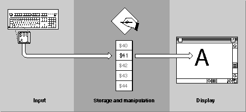

Legacy Document
Important: The information in this document is obsolete and should not be used for new development.
Important: The information in this document is obsolete and should not be used for new development.


Separation of Tasks
The Macintosh approach separates text handling tasks into three fundamental categories, each relatively independent of the others:
See Figure 1-1. In the discussions in this chapter and elsewhere in this book, keep in mind which category of task is under discussion, to avoid misunderstanding.
- Text input
- Text storage and manipulation
- Text display
Figure 1-1 Separation of input, storage, and display in Macintosh text handling
 Through text input, your application obtains representations of text characters. It starts with the user pressing keys on a keyboard. Text input is aided by specialized parts of system software that allow input of text in many languages. Text input is completely independent of text display.
Your application stores character representations in memory, as numeric codes. The main focus of your application is on storing, tracking the characteristics of, and manipulating these codes in memory. How those codes got into memory, and how you will display or print them, are mostly separate issues. For much of your processing, you will be concerned with codes in a memory buffer, rather than keypresses on a keyboard or pixel locations on a screen. The system software has many routines that aid in manipulating text of many languages in memory.
Though text display, your application makes visible the characters it has stored and manipulated in memory. The end result of the display process is a sequence of text shapes drawn on a display device. As is shown later in this chapter, the displayed form of text often has a complex relationship to the way it is stored. In most cases you can consider text display as an independent task, handled in large part by system software, that you call after you have finished receiving, storing, or otherwise processing characters in memory. It is only during display, for example, that the concept of a font has meaning. (Preparation for text display, such as width measurement and line-breaking, falls on the boundary between storage and display, and is in general a cooperative effort between your application and system software.)
- Note
- In Figure 1-1 and throughout this book, text in computer memory is drawn as a vertical table of codes, representing sequential (downward) storage of text characters in a buffer. Some diagrams also include
byte offsets in the buffer, and even miniature representations of
the characters themselves in a given language. See, for example,
Figure 1-3 on page 1-8.
If your application is a word processor that is drawing characters to the screen as the user enters them, all three of these tasks are closely coupled in time. Nevertheless, they are still independent of each other and can be understood best as separate processes.